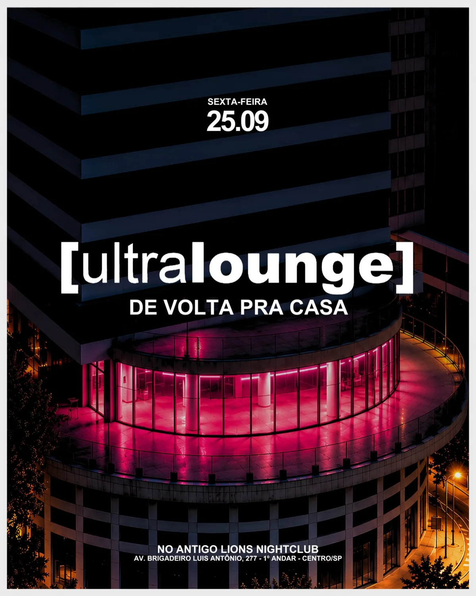

A história
De volta
pra casa.
Durante anos, as sextas da Ultralions passaram pela varanda do antigo Lions Nightclub. Em setembro de 2026, a Ultralounge voltou ao endereço que marcou essa fase da noite paulistana.
Em 27 de novembro, o reencontro continua no mesmo lugar, no primeiro andar da Brigadeiro Luís Antônio, 277.
Ver a edição de setembro